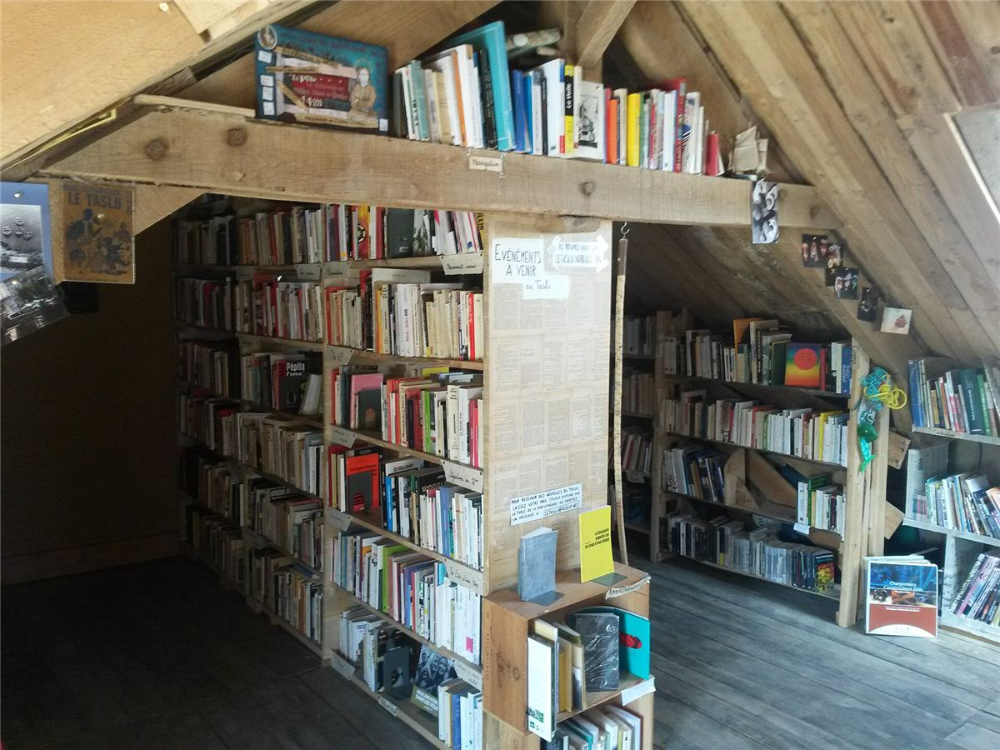
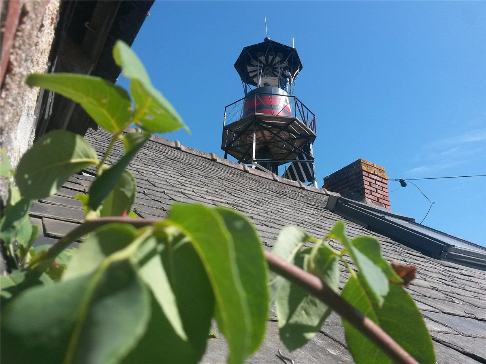

Ce qui a impressionné Mamie à la ZAD, c'est le mélange. Des éleveurs en bottes, des retraités de l'ACIPA, des naturalistes avec leurs carnets, des squatteurs punks, des militantes venues de toute l'Europe. Ils ne s'aimaient pas toujours. Mais ils ont tenu ensemble, et c'est cette diversité qui a rendu le mouvement imbattable.
Les composantes du mouvement
| Qui | Ce qu'ils apportent |
|---|---|
| Les paysannes et paysans « historiques » | Ceux qui ont refusé de vendre leurs terres. Le lien avec le monde agricole, les tracteurs pour les manifs. |
| L'ACIPA et les associations | Les recours en justice, les expertises, les grandes manifestations, le lien avec les élus et la presse. |
| Les collectifs paysans | Des syndicalistes paysans, notamment de la Confédération paysanne, qui cultivent les terres « libérées » et soutiennent les installations. |
| Les Naturalistes en lutte | Des scientifiques bénévoles qui recensent les espèces protégées du bocage pour contester les études officielles. |
| Les occupantes et occupants | Ceux qui vivent sur place, tiennent le terrain, construisent, et inventent une autre façon de vivre. |
| Les comités de soutien | Plus de deux cents dans toute la France à certains moments : argent, matériel, manifestations, accueil. |
Tenir ensemble malgré les différences
Les composantes ne sont d'accord ni sur les méthodes ni sur les buts. Certaines préfèrent les recours juridiques, d'autres les barricades. Le mouvement a pourtant trouvé un principe : le respect de la diversité des tactiques. Chacun agit à sa façon, sans dénoncer les autres. Pendant l'opération César, les associations n'ont jamais condamné la résistance physique, et les occupants ont soutenu les manifestations déclarées. C'est ce qui a empêché l'État de diviser le mouvement entre « gentils » et « casseurs ».
En 2015, les composantes s'accordent sur « six points pour l'avenir de la ZAD » : quand l'aéroport sera abandonné, les terres devront rester entre les mains de celles et ceux qui les font vivre, être gérées collectivement par le mouvement, et accueillir de nouveaux projets agricoles et non agricoles.
La vie sur la ZAD
Sur les quelque 1 650 hectares, des dizaines de lieux de vie, des fermes et des cabanes, ont vu se développer :
- des cultures et élevages collectifs : céréales, maraîchage, troupeaux, dont une partie est distribuée à prix libre ou gratuitement, notamment aux luttes et aux grèves de la région ;
- une boulangerie, des ateliers de menuiserie et de mécanique ;
- un marché à prix libre chaque semaine ;
- une bibliothèque, le Taslu, et une radio pirate, Radio Klaxon ;
- des chantiers collectifs pour construire et réparer les habitats.

Comment on y décide
Pas de chef, pas de conseil élu. Les décisions passent par des assemblées à plusieurs niveaux :
Les décisions se prennent le plus souvent au consensus, avec de longues discussions. C'est lent, parfois épuisant, mais c'est ce qui a permis à des gens très différents de rester ensemble (voir Décider sans chef).
Les terres en commun
Après l'abandon de l'aéroport, l'État veut que chaque occupant signe une convention individuelle, avec un projet agricole à son nom. Une partie du mouvement l'accepte, pour éviter les expulsions, mais en déposant des projets liés entre eux. Pour garder une gestion collective, le mouvement crée ensuite un fonds de dotation, « La Terre en commun », qui collecte des dons pour racheter des terres et des bâtiments et les soustraire à la propriété individuelle.

À retenir
- La force de la ZAD : une alliance entre des gens très différents, et le respect de leurs tactiques.
- Elle ne s'est pas contentée de dire non : elle a construit une vie collective sur le terrain.
- Suite : Victoire, divisions et héritage.
Sources et pour aller plus loin
Lire
- Contrées, collectif Mauvaise Troupe, L'Éclat, 2016.Les composantes, la diversité des tactiques et la vie quotidienne, de l'intérieur.
Sur le web
- zad.nadir.orgLes nouvelles de la ZAD, par ses habitantes et habitants.
- La ZAD sur WikipédiaLes composantes du mouvement et l'après-2018.
Dossier rédigé par la bande à Mamie à partir de travaux d'historiennes et d'historiens et de textes des mouvements concernés. Libre de reproduction.